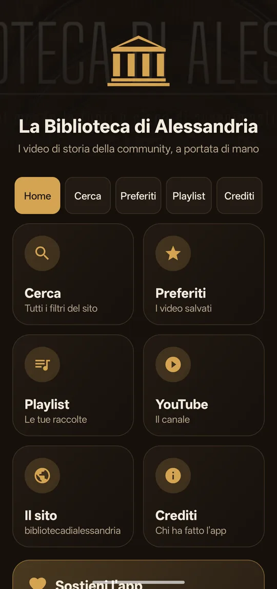

App Android · gratuita · non ufficiale
App Android · gratuita · non ufficiale
La Biblioteca di Alessandria, in tasca
I video di storia della community, a portata di mano: cerca fra migliaia di video con tutti i filtri del sito, salva i preferiti e costruisci le tue playlist.
Versione 1.3.0 · Android 7 o più recente · 1,9 MB · nessun account
